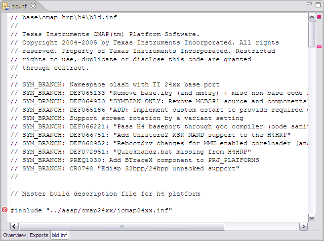

The bld.inf pane shows the source text of the file. This file is automatically updated with changes made in the INF editor Overview and Exports panes or changes can be made manually in this pane. Validation is provided in this window. For example, an error mark is displayed next to the line where an error occurs, as shown in Figure 1. Hover your mouse pointer over the error mark or red error markers in upper right column to display helpful error information.

Figure 1 - INF Editor - bld.inf Pane